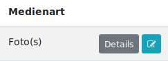

Öffentlicher Bereich¶
Suche¶
Das Archiv kann über die Suchmaske durchsucht werden. Dort gibt es die Möglichkeit nach Stichwörtern zu suchen oder weitere Felder noch zu spezifizieren. Die Bedigungen für die Suche werden im Formular direkt erklärt, bspw. kann nach allen Feldern gefiltert werden und wenn sie angegeben wurden, dann müssen alle Bedingungen erfüllt sein, um eine Trefferliste zu generieren.
Beim Klick auf den Titel eines Artikels oder auf den Button „Details“ wird die Detailansicht aufgerufen. Klickt man auf den Namen eines Autors, so erhält man eine Liste aller Artikel des ausgewählten Autors. Das gleiche Verhalten lässt sich auch über die normale Suche erreichen, indem man kein Stichwort eingibt und nur einen Autor auswählt.
Bemerkung
Ist man eingeloggt, so erscheint neben den Suchergebnissen noch die Möglichkeit den Eintrag schnell zu editieren.
Andere Benutzer sehen den blauen Button nicht.
Detailansicht¶
Jeder Artikel kann in der Detailansicht begutachtet werden. Alle hinterlegten Details sind dort für alle Nutzer einsehbar. Bilder werden automatisch komprimiert dargestellt und können per Klick vergrößert werden. Dateien stehen dort auch zum Download zur Verfügung.
Beispieldetailansicht eines Artikels. Anhänge können heruntergeladen werden. Klickt man auf den Autor, werden alle Artikel dieses Autors angezeigt.
Bemerkung
Eingeloggte Benutzer sehen den blauen Button „Artikel bearbeiten“, um direkt in den Adminbereich zu springen. Für alle anderen Benutzer ist dieser Button nicht erreichbar.